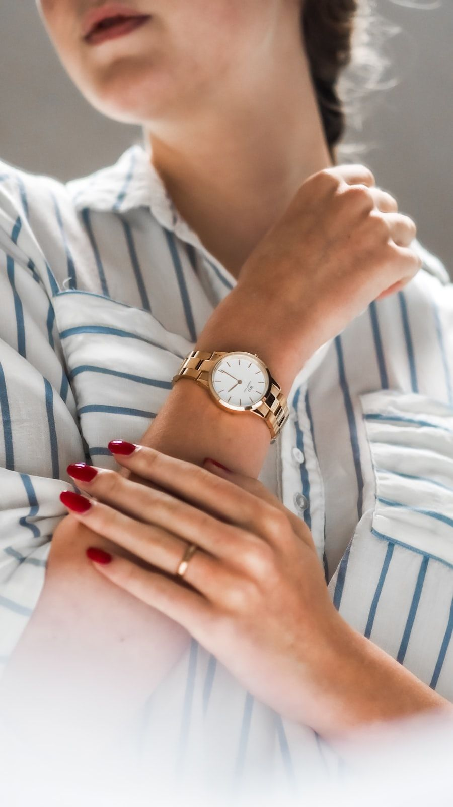

Our Cordwaining Philosophy
In an era dominated by rapid synthetic fashion and computerized stitchers, CrocodileTote champions the patient art of slow leathercraft. Founded in 1994 along Mercer Street in New York City, our atelier operates on a foundational premise of radical transparency, uncompromising material excellence, and lifetime repairability.
We believe a luxury tote bag is not an ephemeral seasonal accessory, but a physical extension of personal character. By embossing prime European steer hide with high-definition crocodile scale relief and sewing each seam with hand-waxed linen thread, we produce carryalls that endure five decades of rigorous everyday carry.


Hand Pattern Drafting
Every tote starts on heavy drafting cardboard, hand-cut with brass curves and transferred to leather grain with surgical diamond awls.

Traditional Saddle Stitch
Two needles, waxed Irish linen thread, and hours of focused benchwork create seams with double the shear resistance of machine seams.

Sand-Cast Brass Finishing
Molten brass is poured into greensand molds, cooled, hand-filed, and buffed to a warm satin glow that resists salt air corrosion.
The Mercer Street Atelier
Located at 181 Mercer Street, New York, NY 10012, United States, our gallery and workshop space occupies a restored nineteenth-century timber-and-brick loft. Visitors can witness raw hides being measured with thickness calipers, listen to the rhythmic tap of pricking irons, and smell the rich botanical tannins and natural beeswax.
We maintain an open atelier policy for patrons with confirmed appointments. Telephone our master cordwainers directly at +1-888-777-5845 to schedule your personal leather selection session.